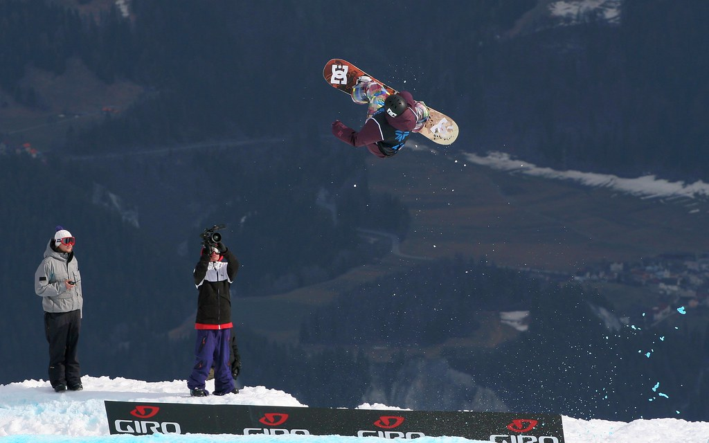

All Mountain

The first type of snowboard and style is All-mountain. These are considered the most popular types of snowboards because they are fit to ride on any part of the mountain. They will work well on powder surfaces but at the same time allow you to carve and handle bumps. These are the top recommended boards for beginners because it allows you to try everything out on the mountain due to the board’s versatility. A majority of the boards come with a directional shape which means the tip of the board is different than the tail. This allows the board to have more balance and make turning viable in any condition.
Freestyle

The next type of board and style is freestyle. These boards are known for being light, shorter, and flexible. These boards are also mainly used in the terrain parks and half pipes. They can still be used on the entire mountain but it's going to be a bit harder to carve and snowboard fast compared to all-mountain boards. These boards also have twin tips meaning the front and the back are the same, this helps with riding forwards and backwards. If you are interested in becoming a freestyle snowboard or have an interest in the terrain park, it's recommended to pick this style.
Alpine

The last type of board that we will go over is the Alpine. Alpine boards are usually the narrowest of the 3 and are meant for carving downhill. Compared to freestyle boards these are not meant for performing tricks or riding the terrain park. These boards have a long, narrow, and stiff design which allows the rider to gain higher speeds and make cleaner turns with full control. Most alpine boards are asymmetrical which means they can only be ridden in one direction.